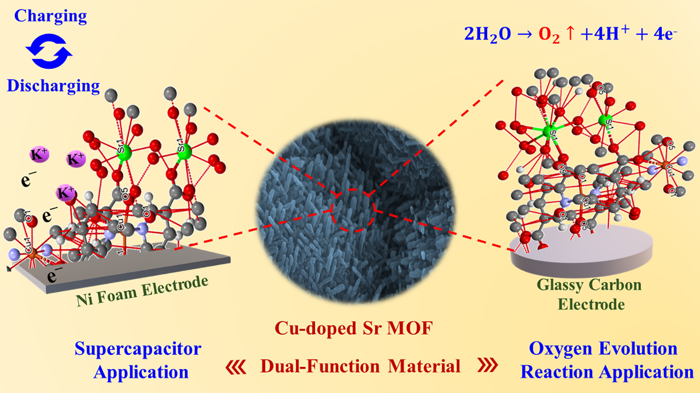
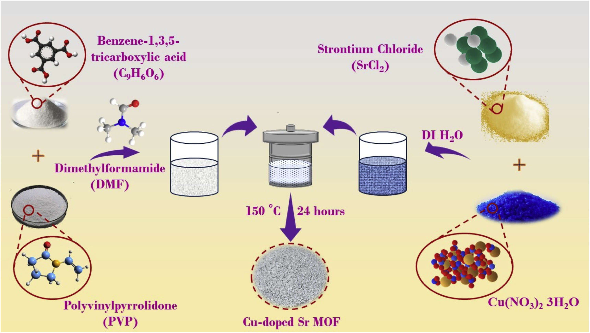

Project
Metal–Organic Frameworks for Energy Storage and OER
Overview
Metal–organic frameworks (MOFs) are highly tunable, porous materials that have become a research hotspot for energy applications, thanks to the synergistic interactions possible between their metal centers. Their main drawbacks, however, are relatively low electrical conductivity and a tendency to mask active sites, which limit their real-world use. This project addresses those limitations through a metal-doping strategy, developing a copper-doped strontium MOF (Cu-doped Sr MOF) that serves as a dual-function active material — performing well both as a supercapacitor electrode (energy storage) and as an oxygen evolution reaction (OER) catalyst (energy conversion).
Why Dope the MOF?
- Synergistic metal centers — introducing copper into the strontium MOF cluster creates favorable Cu–Sr interactions that enhance electrochemical behavior.
- More active sites — doping helps unmask and multiply the redox-active sites that pristine MOFs tend to hide.
- Dual functionality — the same doped framework works for both charge storage and oxygen evolution, streamlining material design.
- Simple synthesis — the material is made through a facile, scalable hydrothermal method.
Energy Storage — Supercapacitor
Cu-doped Sr MOF electrode
As a supercapacitor electrode, the Cu-doped Sr MOF delivered a marked improvement in charge storage over the undoped framework, along with strong cycling stability and fast ion diffusion:
- Specific capacity of ~243.6 C g−1 (~443 F g−1) at 1 A g−1 — far higher than the undoped Sr MOF (~81.3 C g−1).
- Excellent long-term stability (~98.7% retention over 10,000 charge–discharge cycles).
- An assembled asymmetric device (Cu-doped Sr MOF // activated carbon) delivered ~19 Wh kg−1 energy density at ~801 W kg−1 power density.

Energy Conversion — Oxygen Evolution Reaction
Cu-doped Sr MOF electrocatalyst
The same doped framework also acts as an effective OER electrocatalyst — the anode reaction of water splitting. Copper doping substantially lowered the overpotential relative to the undoped MOF:
- Overpotential of ~398 mV at 10 mA cm−2, compared with ~600 mV for the undoped Sr MOF.
- Tafel slope of ~58 mV dec−1, indicating favorable OER kinetics.
- The enhanced activity is attributed to the synergistic effects between Cu and Sr within the MOF cluster.

Approach & Methods
- Synthesis — facile hydrothermal preparation of the copper-doped strontium MOF.
- Characterization — structural and compositional analysis to confirm the doped framework.
- Energy-storage testing — specific capacity, cycling stability, and a full asymmetric supercapacitor device.
- Electrocatalytic testing — OER overpotential and Tafel-slope analysis versus the undoped MOF.
Key Takeaways
- A metal-doping strategy turns a low-conductivity MOF into a high-performing, dual-function material.
- The Cu-doped Sr MOF works for both supercapacitor energy storage and OER energy conversion.
- Cu–Sr synergy within the MOF cluster is the key driver of the improved performance, opening a design route for other doped-MOF electrodes and catalysts.
Related Publication
- Copper-doped strontium metal-organic framework: Dual-function active material for supercapacitor and oxygen evolution reaction Electrochimica Acta View paper